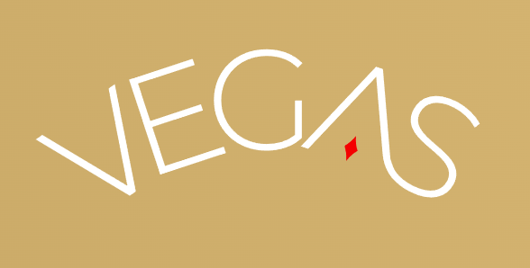

Pham Minh Phuc
IT Expert
- 20/02
- Male
- flashphuc219@gmail.com
- District 6, Ho Chi Minh City, Viet Nam
- 0906686281
- Download CV
SUMMARY
♦.
EDUCATION
Informatics Center - University of Natural Sciences
♦ Overview of relational databases: Database, Table, Mô hình ERD (Entity Relationship Diagram)
♦ Introducing BigQuery: Google Cloud, BigQuery, Setup, Google Cloud Console
♦ Basic SQL commands - Subquery. Combining data from multiple tables
♦ Statistical Aggregate Functions - Window Functions
♦ Các hàm tổng hợp thống kê (Statistical Aggregate Functions)
♦ Xử lý làm sach dữ liệu (Data Cleaning) Strategies for optimizing BigQuery queries
07/2020 - 02/2021

Cybersoft - Cyberlearn Programing Education Center
♦ Programming course: thinking in programming, problem-solving, Java language, OOP
♦ Front-end Foundation course: basic knowledge of HTML5, CSS3, Bootstrap 4, SASS/SCSS, Javascript (ES5/ES6), Jquery, AJAX, Git, ...
02/2017 - 06/2017

VnPro Center
♦ I had knowledge about Networking(LAN, WAN, Wifi...)
♦ I was teached and contacted with devices of Cisco (Router, Switch...)
09/2011 - 09/2016

Ton Duc Thang University
♦ Major: Telecommunication
♦ Total score: 6.51.
WORK EXPERIENCE
04/2023 - 08/2024
Chains Caravelle Hotel Joint Venture Company LTD
IT Technician
♦ Maintain stability and security of company's E- Gaming systems
♦ Cooperating with Technician team to solve technical problems
♦ Maintain the smooth operation of system, computers, laptops and other office equipment
♦ Troubleshoot system and network problems, diagnosing and solving hardware or software faults
♦ Develop tools to improve staff working efficiency;• Another task assigned by manager.• Installing, configuring & maintaining IT infrastructure, workstations, printers...
♦ Managing network system (Router, Switch, Wireless, LAN, VPN, Partner connections...) timely detect and fix any problems when necessary.• Managing and deploying virtual infrastructure, Servers (VMware vSphere, AD, File server, Web servers...).
♦ Monitoring daily system performance and doing backup tasks.• Creating and implementing the plans for network security, file permissions, doing backup and disaster recovery.
♦ Supporting Hardware team to setup EMG machines.
♦ Troubleshooting networks, systems and applications issues.
08/2022 - 12/2022
Freelancer IT
♦ Troubleshoot about the network, mail, software, hardware by remote support (Anydesk, Ultraviewer, Teamviewer...) or On-site
♦ Install the softwares which are asked, active or reinstall Win10.
♦ Fix errors about the laptop's driver, sound, camera, monitor...
♦ Manage Microsoft Office 365, Microsoft Azure, Onedrive, Print sever, Wifi System, Google Workspace (G Suite)....
♦ Replace the parts of laptop or PC (RAM, hard disk, battery...). Familiar with models of HP, Dell, Asus, Acer...
12/2021 - 08/2022

Joint Stock Company Truong Hai Group
Technical Administrative Specialist(IT Helpdesk)
♦ Support users when experiencing problems with computer machinery (Win errors, machines not up, full mail, screen not up ...)
♦ Install computer equipment, necessary software (AutoCAD, Itax, HTKK, Nitro ...) for users, manage equipment, arrange and transport
♦ Do the paperwork handed over to users, direct events large and small are organized in conjunction with the event department
♦ Write a document instructing new personnel to use electronic devices, as well as internal installation
♦ Manage printer servers, create accounts for users, join domain, install mail, click network cables ...
♦ Support the difference department Employees . Create new accounts on the window server and Manage the operation of it and printing server. Checking group Mail and personal mail to reply partners issues (mail trouble, Install new software, printer, scan,…etc..).
♦ Creating the documents For new eployees or new softwares, solutions, devices. Setup meeting room (offline or online) for head officers Sometimes I supplied the infrastructure department (clean and Organize server room) Remote the peer’s device by damware or ultraviewer for fixing Errors.
5/2021 - 11/2021

Alpha Apparel Group Corporation
Operation Expert(IT Helpdesk)
♦ Installation, maintennance, hardware clean. Follow operation system, setup software(Camera, AI, Corel…)
♦ Taking the network system are been operated fluently. If system is been taken break-down, will report suppliers to support right now. Suggesting the new configuration's PC or laptop to departments. Contacting the suppliers to supply products and hand over.
8/2019 - 3/2021

Co.opMart Supermarket
IT Employee
♦ Onsite in the Coopmart and support customers and colleagues about the company's software, hardware, server, cash...
♦ Fix and update the company's software, hardware, server, cash...
8/2017 - 2/2019

Dcorp R-Keeper Vietnam - Ho Chi Minh City
Deployment Employee and Command Center
♦ Deploy POS software(R-keeper7) for customers: Redsun, Golden Gate, New Pearl...
♦ Answer the questions about the software on the hotline. Support and solve by TeamViewer or ultra viewer about the software's bugs. if I solve impossibly, I'll onsite to the customers(with the condition include the customer sign technology contract)
08/2016 - 11/2016

FPT Shop - Ho Chi Minh City (FRT)
Support Technology And Sale
♦ Support Technology for the customer and sell items in the shop.
♦ Check products, software, date experience, licenses...
♦ Solve customer's incidents (the black screen, the battery is been failed, the speaker is inactive...)
CERTIFICATIONS / LICENSES
02/2017 - 06/2017
♦ CCNA Certification (Cisco Certified Network Associate) ( Vnpro, Ho Chi Minh City )
03/2016
♦ TOEIC 505 (IIG, Ho Chi Minh City)
SKILSS
Front-end Developer
♦ HTML5/CSS3, JavaScript, Git, React...
Microsoft Office
♦ Word, Excel, Power Point...
English
♦ Communicating (Intermediate), reading documents, writing email
Soft skills
♦ Teamwork, self study